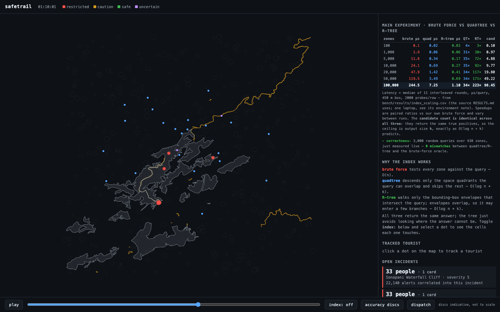
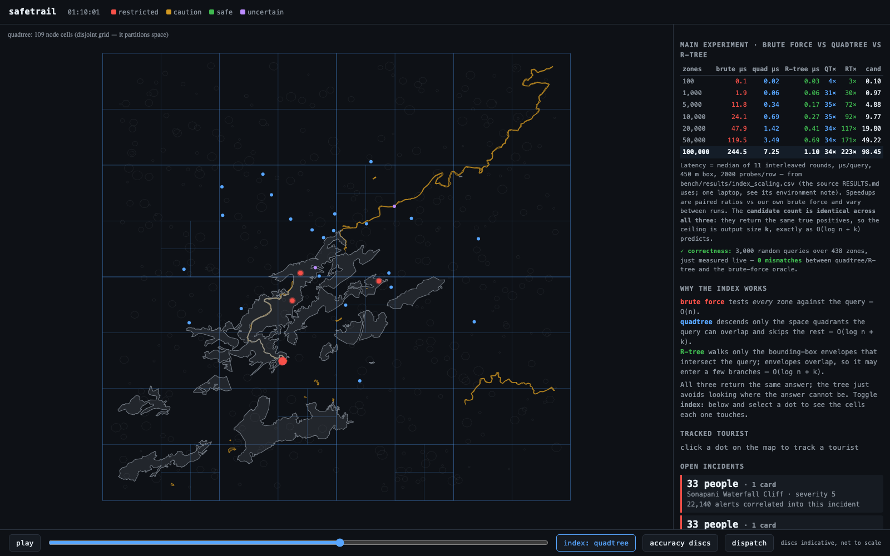
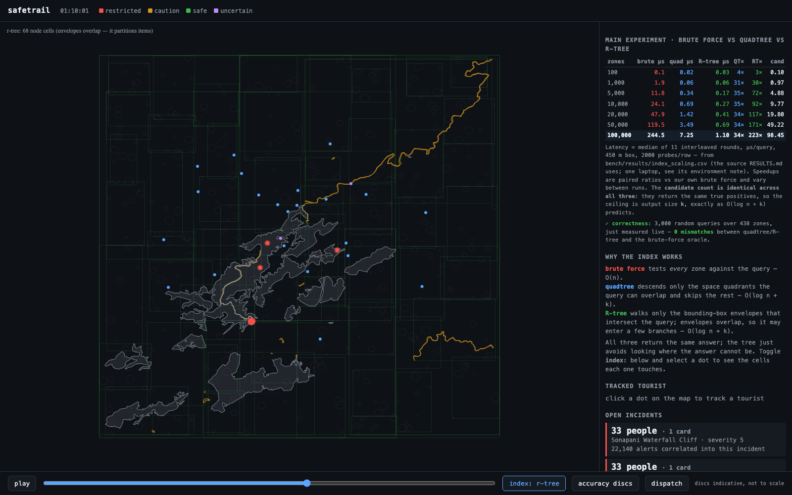
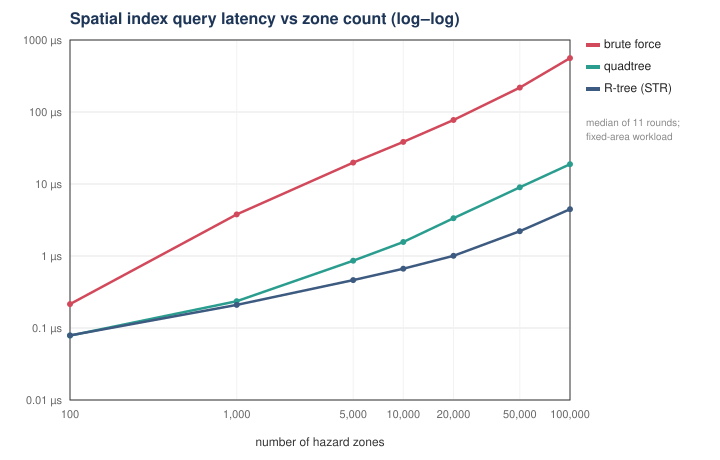

SafeTrail — project review
Data Structures · project review
SafeTrail
efficient tourist geofencing
Many hazard zones, a stream of noisy GPS positions, and one question every
second: inside, outside or
uncertain — answered fast,
without ever changing the answer.
- C++17, no external libraries — the data structures are the work
- brute force · quadtree · R-tree · AVL interval tree · persistent quadtree
- every speedup is measured, and every structure is checked against brute force
1 / 10
The problem
Geofencing is repeated point-in-polygon, under uncertainty
- Zones: polygons with rules and validity windows — real OpenStreetMap
features around Shillong (deep water, cliffs, forest), up to 100,000 in the benchmarks
- Fixes: one GPS position per person per second, with an accuracy of
±4 m in the open and ±35 m under trees
- Output: not states but transitions — ENTER, EXIT, UNCERTAIN —
and only when something changes
A position is a disc, not a point. A fix 10 m
outside a boundary with 30 m accuracy is uncertain, not outside.

2 / 10
Why brute force does not scale
Check every zone against every fix: O(n) per fix
for each fix: # once per person per second
for each zone: # all n of them
if box(zone) meets box(fix):
exact point-in-polygon # O(V) per candidate
In the review scenario (5,038 zones, 40 people, one hour):
711 million box tests. At 100,000 zones one query costs
240–560 µs on this laptop, depending on the session — before any geometry.
…and why it is kept forever
Brute force is too simple to get wrong. It stays in the code as the
oracle every faster structure is compared with, and as the
denominator of every speedup.
The index only has to remove the scan. It cannot remove the answer:
the ~k zones that genuinely overlap a query must all be returned, whatever the structure.
3 / 10
Spatial indexes
Quadtree partitions space; R-tree partitions items

Quadtree — disjoint cells; a box lives in the smallest cell that
contains it. Root fitted to the data, doubling expansion, collapse on delete.
Simple, and it path-copies cleanly.

R-tree — tight envelopes that may overlap; built by
STR bulk loading (sort, tile, pack), which makes it ~6× faster to query
than the same tree built by insertion.
Both: O(log n + k) expected, O(n) worst case (identical or heavily overlapping boxes).
Both return the same candidates as brute force — by construction, and checked on every run.
4 / 10
Exact geometry and state
The index finds candidates; geometry decides; a state machine reports
Filter → refine
The query box is the exact bounding box of the accuracy disc on the sphere, so
the filter is a superset of what the exact test can accept. If it were
0.1% too small, the fast path would silently drop zones — it was, once.
Three-valued containment
Ray casting (half-open rule, holes), cross-checked by an independent winding-number
implementation. Inside / Outside only
when the whole disc is on one side; otherwise Uncertain.
Hysteresis
ENTER: 15 m inside, 3 agreeing fixes, 5 s dwell. EXIT: 25 m outside, 3 fixes.
Uncertain is reported, never acted on. Every open (person, zone) state is observed
every fix, even when the index no longer returns the zone.
One hour of the review scenario: 602 entries with the filter,
17,906 without — same trajectories, same noise. Against noise-free truth, the filter
reports 96% of the real transitions under realistic GPS drift.
5 / 10
Advanced structure: history
A persistent quadtree: "what were the rules at 00:45?"
- Nodes are immutable; children are shared pointers
- A change copies one root-to-leaf path (~15 nodes on a 5,000-zone index)
and shares everything else
- A rule (validity) change copies nothing: an append-only log per zone
- A query against the past is the same traversal from an older root —
it costs what a query against the present does
Measured (make bench §9)
| versions | nodes allocated | if full-copied | sharing |
|---|
| 1,001 | 14,025 | 158,257 | 11.3× |
| 5,001 | 71,314 | 930,257 | 13.0× |
Two time axes, kept apart: transaction time
selects the version, valid time says when a rule is in force. Verified against
a replay oracle that keeps a full table per version.
6 / 10
Correctness
Faster is only worth something if the answer never changes
- Oracles: brute force for the indexes; a linear scan for the interval tree;
a full-table replay for the persistent index; winding number for ray casting
- Differential tests: ~55,000 hostile queries per index configuration
(identical boxes, zero-area boxes, poles, past lon 180, far inserts), with the
tree's invariants audited after every operation
- End to end: the whole engine must emit bit-identical events under all four indexes
- Mutation testing: 22 realistic bugs injected one at a time — 22 / 22 caught
- UBSan on macOS, ASan + UBSan and g++
-Werror in CI; deterministic replay
What this found: ten real defects
The state machine never looked at a zone again once it left the candidate window —
missed exits, silent re-entries.
The hysteresis filter let Uncertain through: ~60% of the demo's enter/exit events were flaps.
The index query box was 0.11% too narrow; a boundary tolerance was 11 cm thick on a 1 m edge;
the sweep line called 94 of 800,000 degenerate rings simple.
Each is pinned by a test that fails on the old code, or by a mutant that reverts the fix.
7 / 10
Benchmark results · make bench · one laptop (Apple M4)
Measured against our own brute force, as paired ratios
| Workload | Brute force / naive | Quadtree speedup (range over runs) | R-tree speedup (range over runs) |
|---|
| Range query, 100,000 zones in one district (k ≈ 98) | 239 µs | 33.7× (31.7–33.7×) | 224× (211–224×) |
| Range query, 100,000 zones at constant density (k ≈ 1) | 216 µs | 543× (423–543×) | 1042× (845–1042×) |
| Point-in-zone, 5,000 polygons × 128 vertices, vs checking every polygon | 262 µs | 1461× (1461–1552×) | 2088× (ratio of medians) |
Ranges are over repeated runs in one session. Between
sessions the R-tree's ratio has moved by more than 2× on this laptop (about 100× in
September, over 200× in October); read ~100× as the floor. Candidate counts are
identical across indexes and the checksum gate fails the run if results differ.

In one district k grows with n: ~98 zones genuinely overlap each query at 100,000,
so the quadtree's ratio plateaus. At constant density (k ≈ 1) the same code is hundreds
of times faster. O(log n + k), measured both ways.
8 / 10
Architecture and implementation
One path from fix to event; everything else hangs off the event stream
GPS fix ──► query box ──► spatial index ──► per candidate: in force? ──► exact geometry
(± accuracy) (conservative) (brute / quadtree / O(1) validity check (inside / outside /
R-tree) uncertain)
│
events ◄── transition only on change ◄── hysteresis state machine ◄────────────────┘
│ (+ every open state observed each fix, returned by the index or not)
└──► extensions: alert correlation → incidents → dispatch · evidence log · the dashboard
Code
C++17 · 37 source files · 48 headers · 45 test files · no dependencies.
Layers point down: geo/, ds/ → index/ → fence/ → simulator, dashboard, benchmark.
Build
make or CMake from one source glob and one warning list;
-Werror; Clang Static Analyzer; make validate gates a merge.
Output
A headless engine, a benchmark harness that writes CSVs the docs
are rendered from, and a dashboard that is one HTML file — no server, no network.
9 / 10
Limitations and conclusion
What it does not do — said before being asked
- Simulated people over real geography; no field GPS data
- Worst case O(n) queries for both spatial trees; O(n) removal everywhere
(no id → node map)
- Geometry is tolerance-based (~0.1 mm on-edge), not exact arithmetic
- Zones crossing longitude ±180° are refused; query boxes do not wrap
- A GPS jump inflates the query radius for about a minute (correct, slow)
- Single-threaded, in-memory; one laptop's benchmarks, quoted as ranges
In one sentence
Five hand-built structures turn an O(n)-per-fix problem into a fast one, and the
project's real work was showing — with oracles, differential tests, invariants and
mutation testing — that none of them ever changes the answer.
Live: make review · open dashboard.html
10 / 10